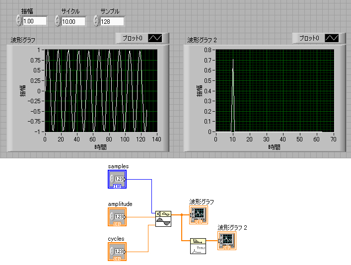

まずは，何も考えずに，フーリエ変換を行ってみましょう．
今回は，LabView，で作成してみました．
普通のプログラムよりもグラフィカルなので，直感的にわかりやすいプログラムです．
アカデミックが充実しているので，大学などでは結構お得かも．
ただ，コマンドが結構あったり，配線の定義などで，結構難儀しています．
では，実際のプログラムの様子をご覧ください．

上のグレー部が，フロントパネル，実際に作業する際のパネルです．
下の白い部分が，ブロックダイアグラムです，ここで実際のプログラムを作成します．
今回使った関数は，
正弦パターン：サイン波の作成に使います．
振幅と位相スペクトル：フーリエ変換に使います．
波形グラフ：実波形や，フーリエ変換後の波形を表示します．
これだけです．
左の実波形ではサイン波が，右のフーリエ変換では１０のところにピークが立っていますね．
実波形では，一つの波だったので，フーリエ変換では一つのピーク，となるのです．
このサイン波作成のところに実験で得られたデータを置き換えることで，とりあえずは簡単にフーリエ変換が可能です．
また，パワースペクトルを求めたければ，振幅と位相スペクトル，を，オートパワースペクトル，という関数に置き換えるだけです．